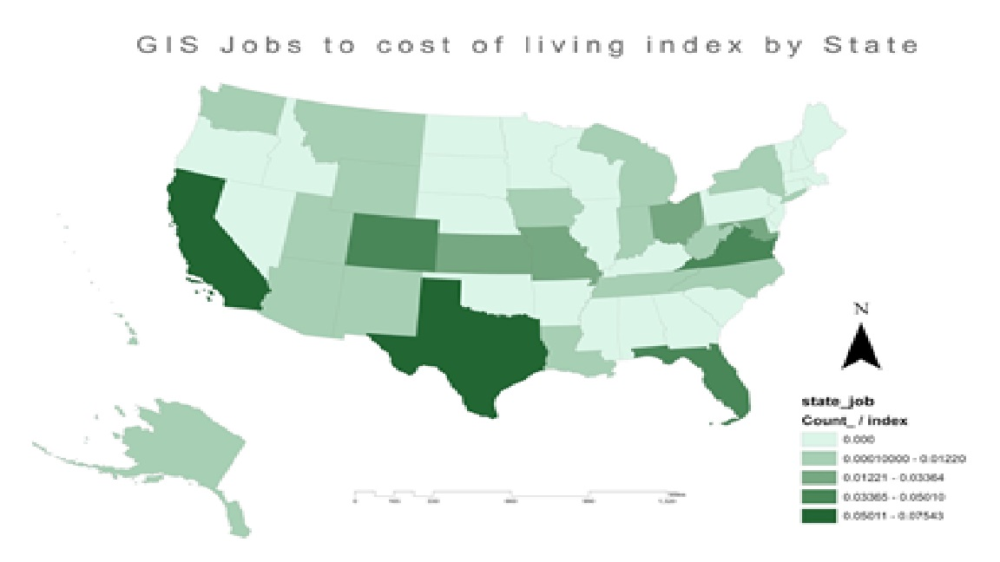
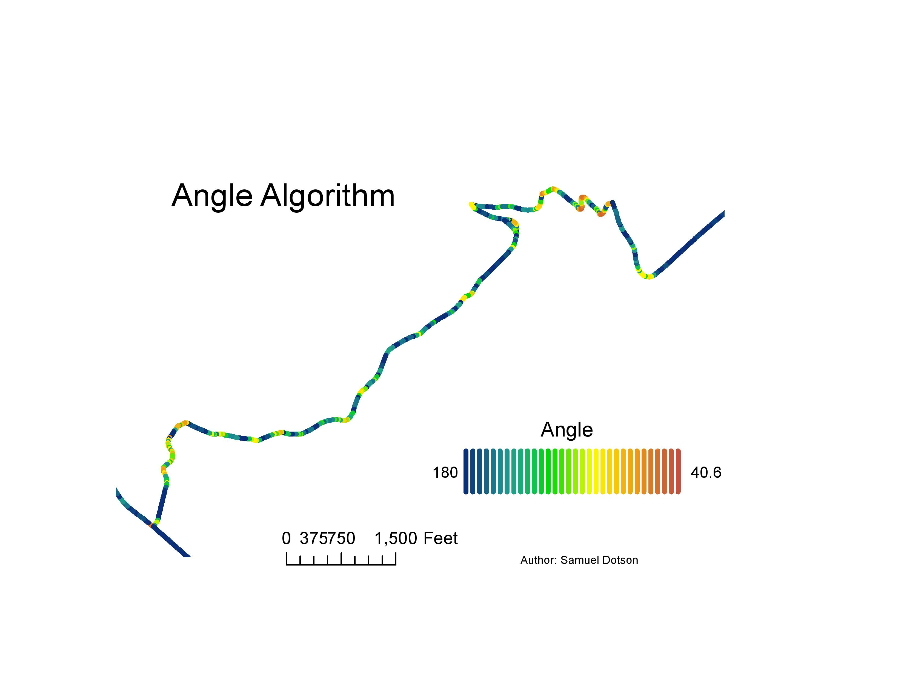
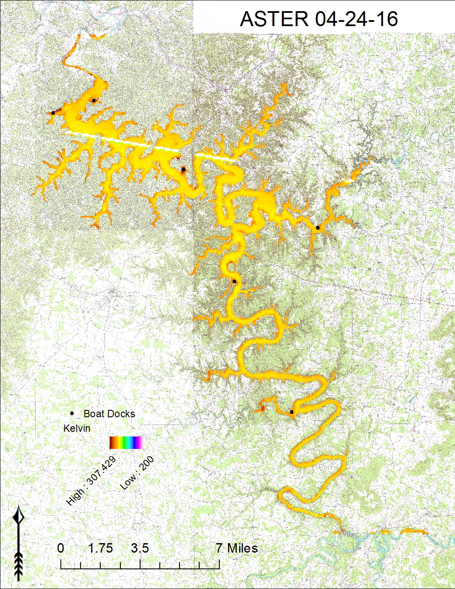
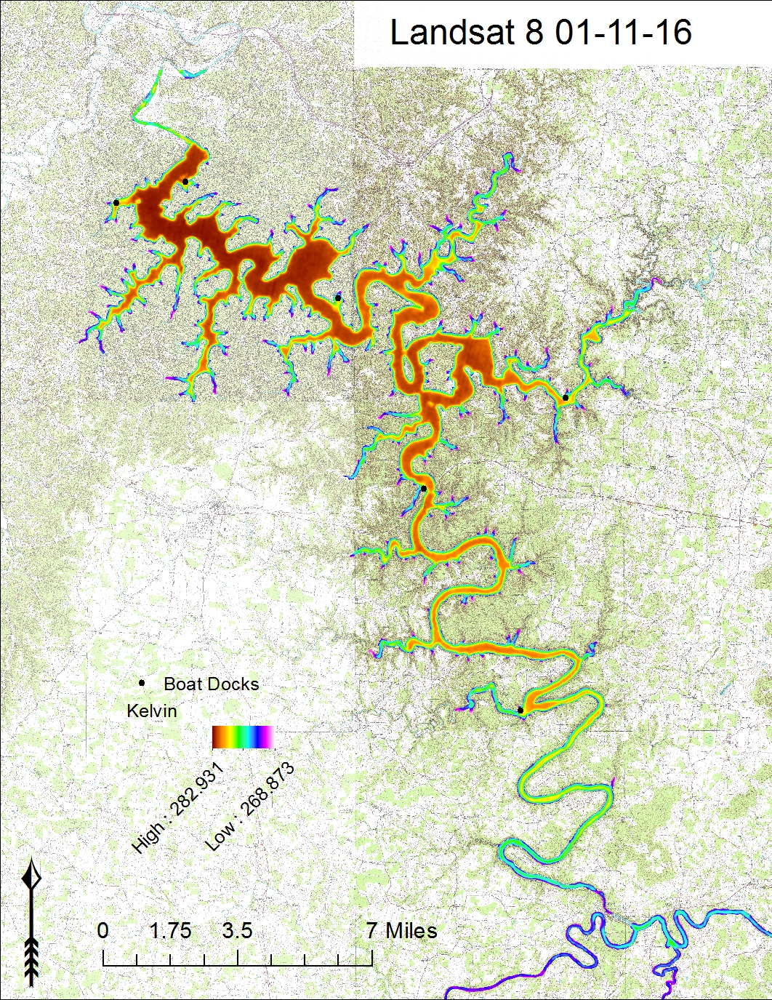
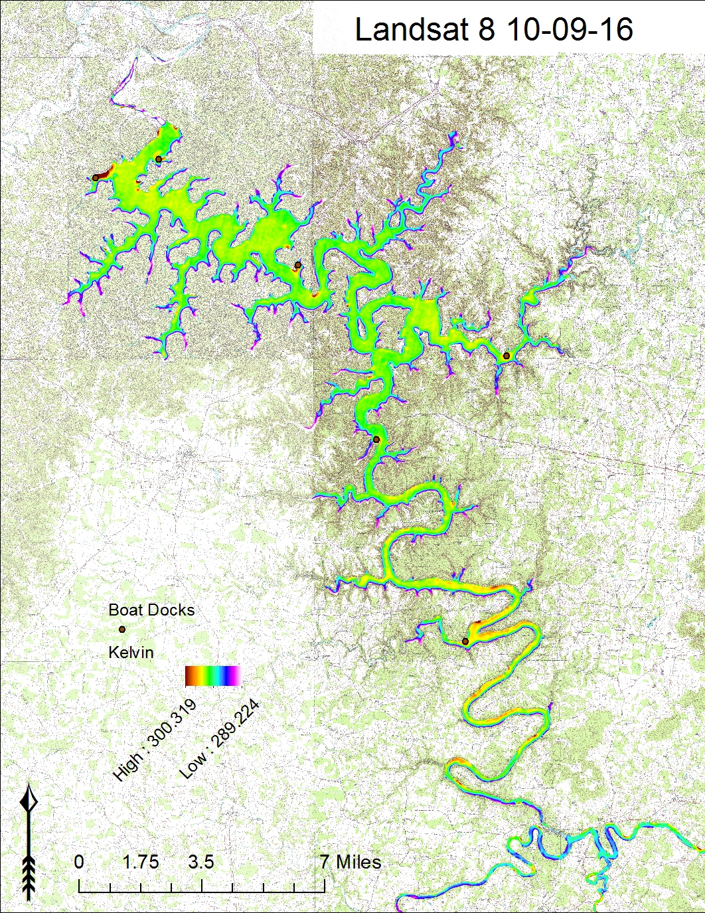
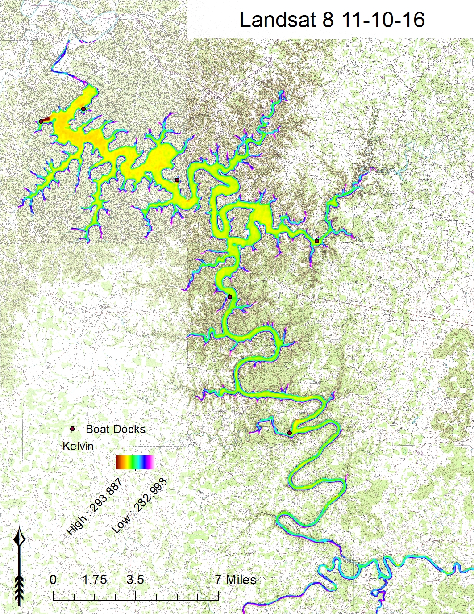
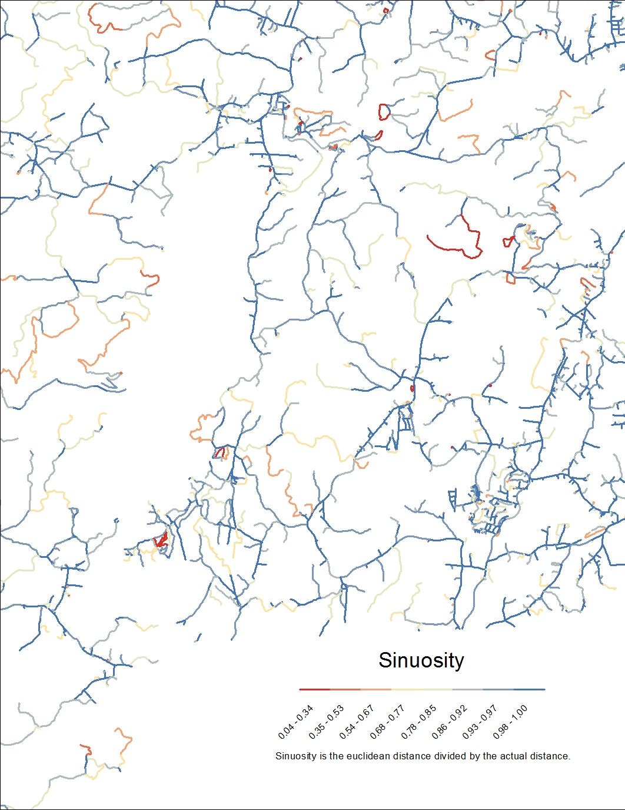
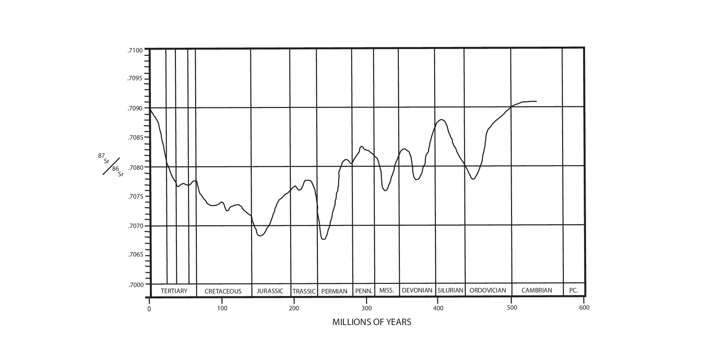
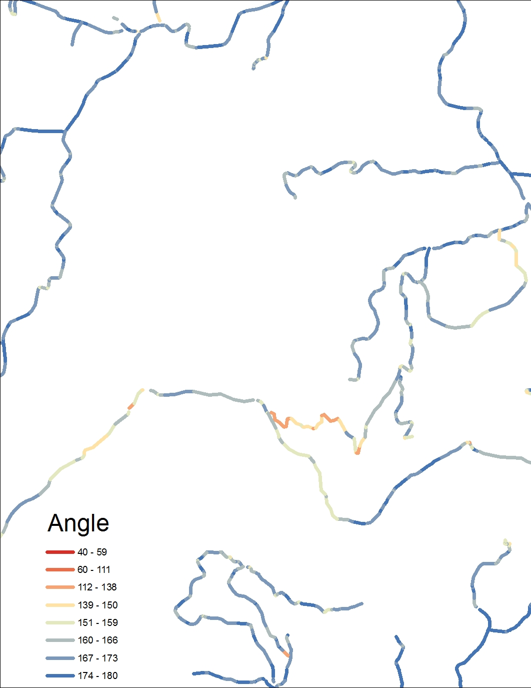

Some of my Work

Heatmap showing high densities of GIS jobs

Number of GIS jobs posting/cost of living

Geologic Cross-section done in Adobe Illustrator

ArcPy script used to find approximate road curvature.

Center Hill Lake Thermal Infrared temperature Analysis 1

Center Hill Lake Thermal Infrared temperature Analysis 2

Center Hill Lake Thermal Infrared temperature Analysis 3

Center Hill Lake Thermal Infrared temperature Analysis 4

Solving for road sinosity- euclidian distance / actual distance

Isotope Graph

Soving for angles between road segments using the dot product method.